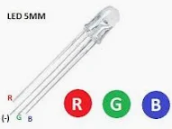
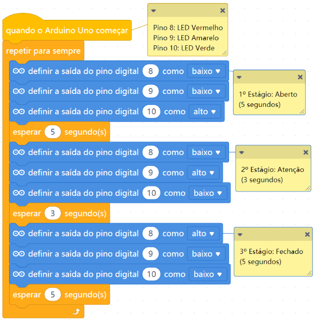

Um LED RGB é um componente que combina três cores de luz (vermelho, verde e azul) em um único chip. Ao misturar essas três cores primárias de luz em
diferentes intensidades, ele consegue produzir mais de 16 milhões de tonalidades e cores sólidas, incluindo o branco.
Como funciona?
Cores primárias: Cada LEDs tem Vermelho (Red), um Verde (Green) e um Azul (Blue),
A alteração do brilho de cada um cria o espectro de cores, quando os três são ligados juntos na potência máxima, o resultado é a cor branca.

O Leds RGB contém 4 pinos de ligação um negativo e três pinos que serão ligados nas portas digitais 8,9,10 onde serão programadas para serem ligadas.

Esta programação farpa com que o led ligue as cores vermelho, verde e azul que são as cores primarias da luz, agora se ligarem as portas 8 e 9 da a cor
amarela que é a combinação de vermelho e verde.
Atividade
Faça todas cores secundária incluindo a cor branca?